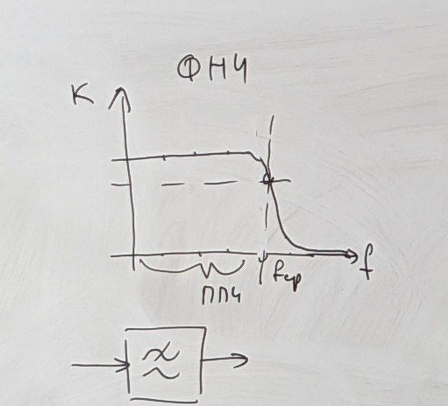
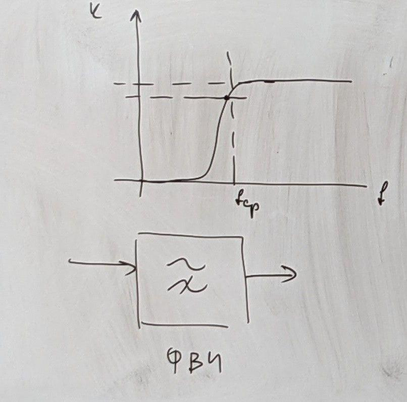
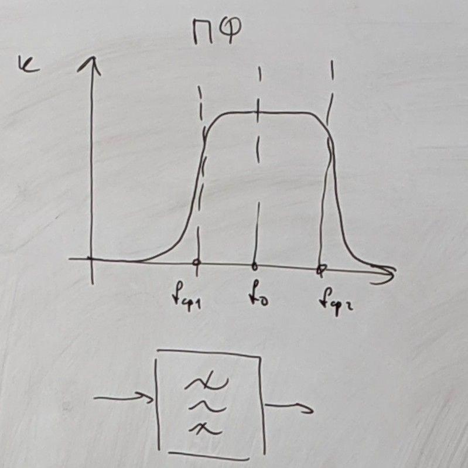
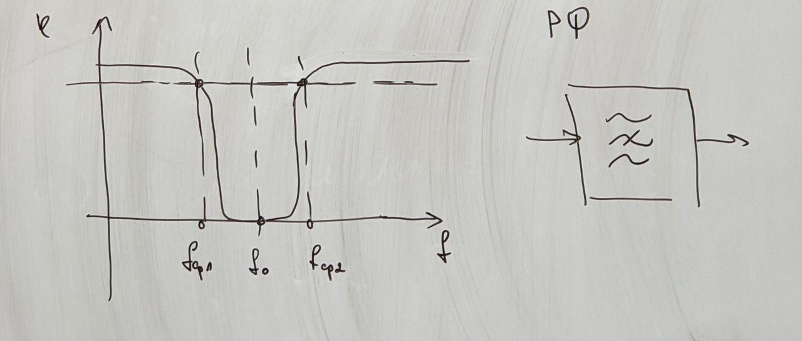
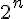
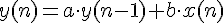
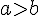
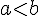

ФНЧ - фильтр низких частот - пропускает только нижние

ФВЧ - фильтр высоких частот - пропускает только верхние

ПФ - полосный фильтр, пропускает только конкретные

РФ - режекторный фильтр - не пропускает конкретные

Простейшие алгоритмы цифровой фильтрации:
Усреднение входных отсчетов АЦП
Стараются брать коэффициенты усреднения  для целых n
Недостаток простого алгоритма усреднения: при прямой реализации усреднения схема фильтрации вносит чистые запаздывания
Плавающее среднее
Экспоненциальный фильтр - самый простой - БИХ(Бесконечная Импульсная Характеристика)

при  - большая инерционность, низкая скорость
при  - маленькая инерционность, высокая скорость
На МК и при реализации в ПЛИС обычно применяют формат с фиксированной точкой
Фильтр импульсных помех:
Алгоритм вырезания "игл": брать нечетное кол-во отсчетов, выбрать самое среднее значение
В простейших ИП обычно комбинируют данные 2 типа фильтров
1 этап - устранение импульсных помех
2 этап - фильтр скользящего среднего или экспоненциальный фильтр